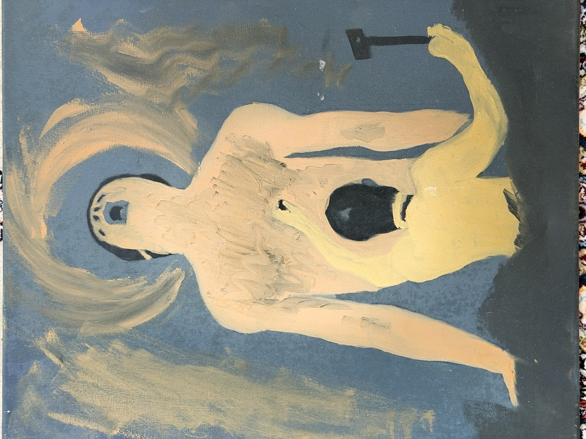
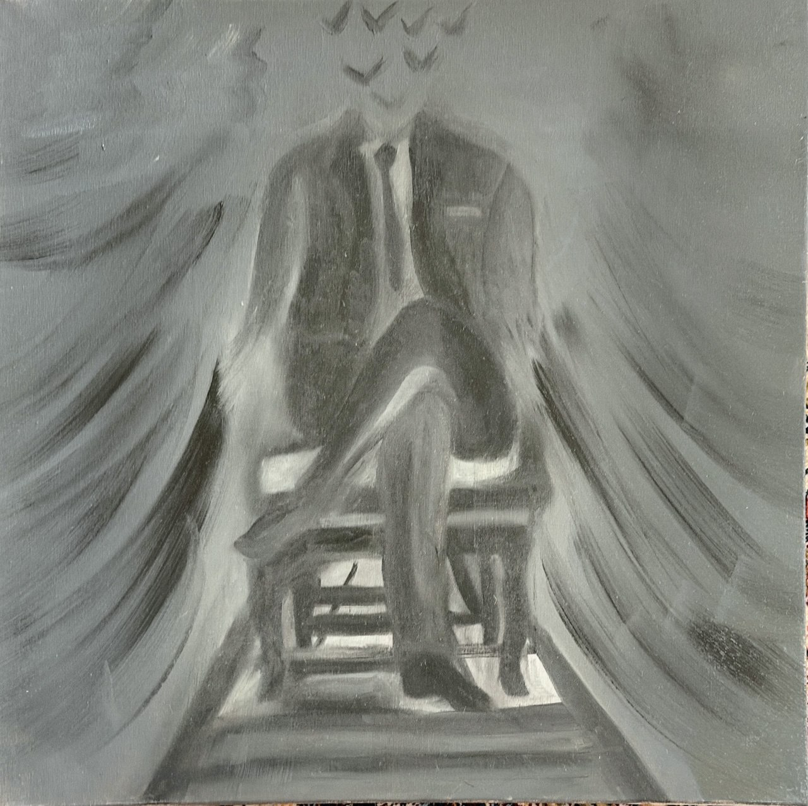
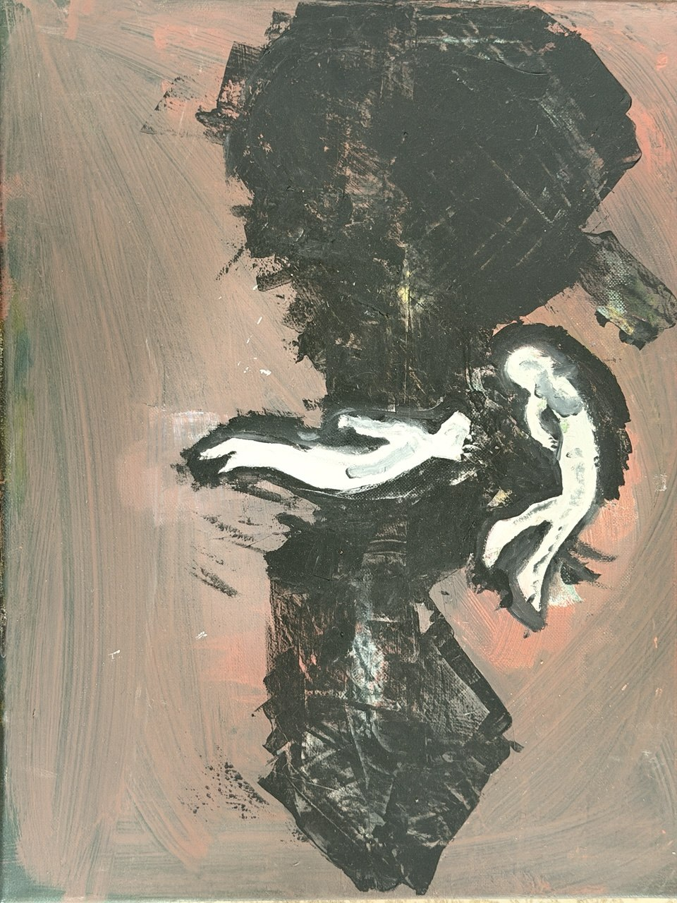

Aria Naseri · Paintings & drawings
Stories in
colour.
Figures in motion. Quiet moments. A world imagined through colour, line, and feeling.
Explore the collectionA selection of nine worksPainting & portraiture
The collection
Selected work
A closer look at colour, character, and movement.

Dance in Red
Painting
Black Horse at Sunset
Painting

Woman in Gold
Painting
Dance in Blue
Painting
Wolf and Rose
Painting

Behind the Curtain
Painting

Black Horse Study
Painting
Portrait in a Hat
DrawingBehind the work
An eye for
expression.
Arista brings together paintings and drawings by Aria Naseri, moving between expressive figures, dancing couples, animal studies, and portraiture.
Rich reds, luminous yellows, and deep blues sit alongside quieter monochrome studies. Across the collection, gesture and contrast give each subject its own character.
Return to the collection